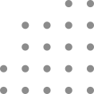
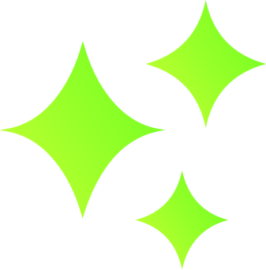

Desenvolvedor Front end, UX/UI Designer, Web Designer
Localizado em São Paulo. 👨💻

Localizado em São Paulo. 👨💻


Sou Front-end com experiência em desenvolvimento web e design de mídia impressa. Minha abordagem consiste em simplificar problemas complexos por meio de soluções de design elegantes, intuitivas e funcionais.
Meu objetivo é criar sites que, além de serem visualmente atrativos, ofereçam uma experiência de usuário fluida e eficaz. Ao personalizar cada projeto, asseguro que sua marca e mensagem sejam comunicadas de forma criativa e impactante, alinhando estética e usabilidade de maneira harmoniosa.

